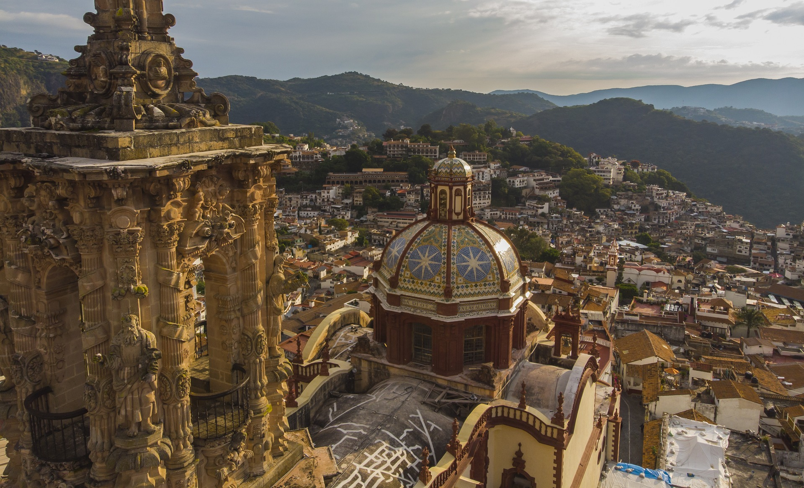
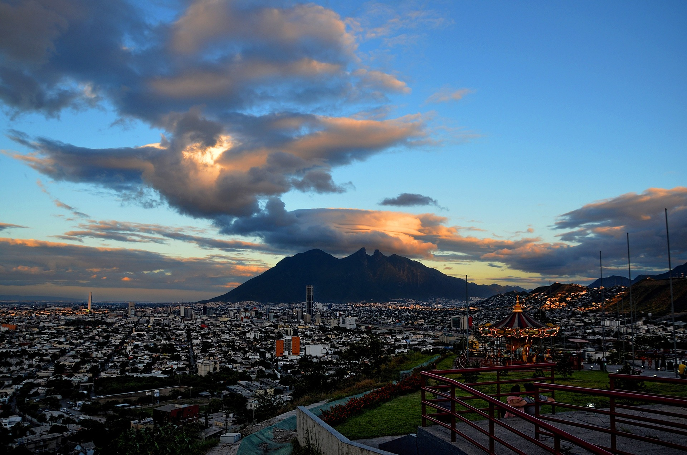

• O México é um país situado entre os Estados Unidos e a América Central, conhecido pelas praias no
Pacífico e no Golfo do México e pela paisagem diversificada que inclui montanhas, desertos e selvas.
Ruínas antigas, como Teotihuacán e a cidade maia de Chichén Itzá, estão espalhadas pelo país, assim como
cidades da era colonial espanhola. Na capital, Cidade do México, lojas elegantes, museus renomados e
restaurantes gourmet atendem às necessidades da vida moderna
"A Revolução Liberal ocorreu em 1857, e o poder foi assumido por Benito Juárez. Em razão de
sua política progressista, ele não foi bem recebido pelos conservadores, o que teria levado, assim, a
uma guerra civil até 1861, quando foi vencida pelos liberais.
Após a vitória, Benito suspendeu o pagamento da dívida externa.
Em 1863, os franceses aproveitaram-se desse pretexto para invadir o México. Depois de quatro anos, a
monarquia instalada pelos franceses foi derrubada e o imperador foi fuzilado."


Guerra do México, Revolução Mexicana e ditadura
No ano de 1836, ocorreu a independência da região do atual estado norte-americano do Texas, e sua
anexação pelos Estados Unidos, em 1845, o que resultou na Guerra do México. Já derrotado, o México
perdeu ainda o Novo México, a Alta Califórnia, Utah, Arizona, Nevada e o oeste do Colorado.
"Em 1876, o general Porfirio Díaz implantou uma ditadura e permaneceu durante décadas no poder. Como as
eleições que lhe deram a vitória foram consideradas fraudulentas, os camponeses rebelaram-se e deram
início à Revolução Mexicana."